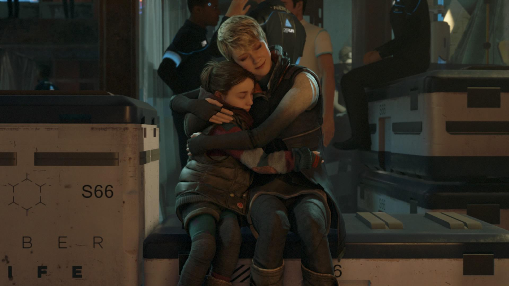
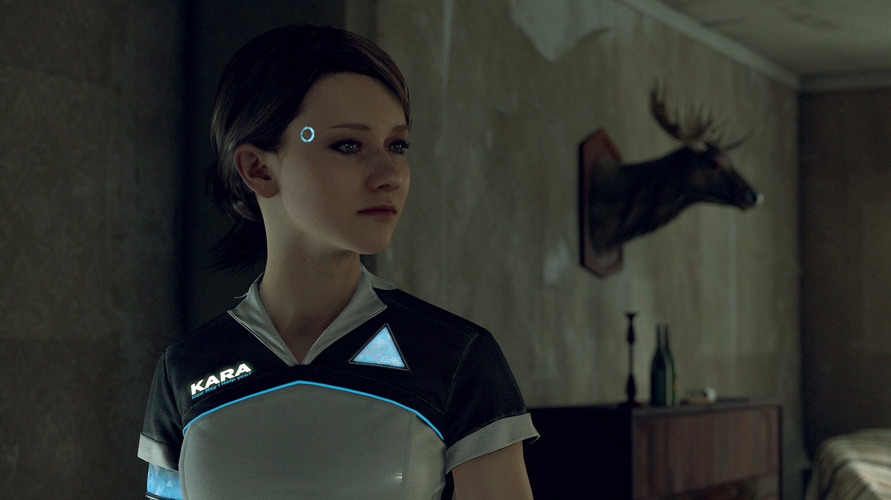
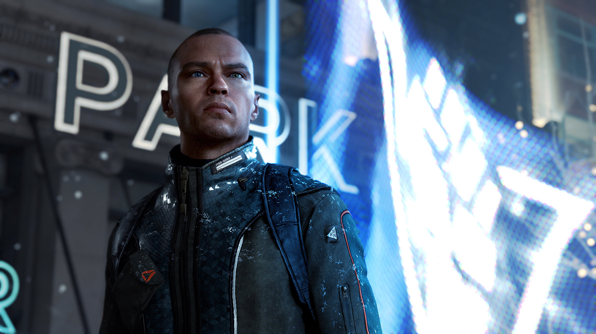
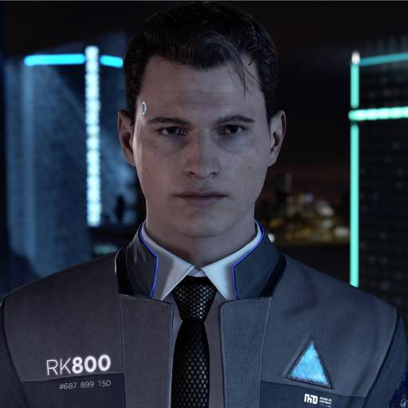
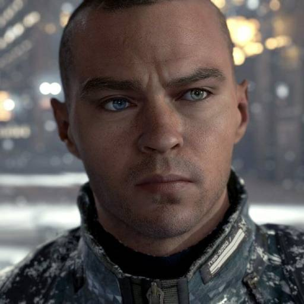
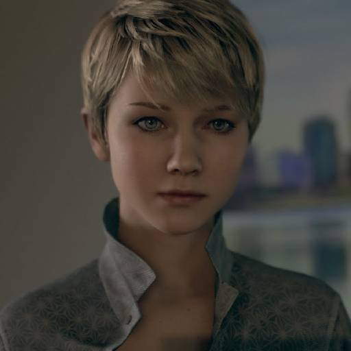

Detroit: Become Human - Wiki de juegos




General
Detroit: Become Human es un videojuego de aventura gráfica, desarrollado por Quantic Dream y publicado por Sony Interactive Entertainment, inicialmente lanzado en exclusiva para la consola PlayStation 4. Posteriormente, Quantic Dream anunció que abandonaba el contrato de exclusividad con Sony y que Detroit: Become Human saldría a la venta en otras plataformas. La fecha de lanzamiento para PlayStation 4 fue el 25 de mayo de 2018, mientras que en PC fue lanzado el 12 de diciembre de 2019.
El argumento del videojuego se sitúa en un mundo futurista donde los androides, con auténtica apariencia humana, comienzan a desarrollar sentimientos y emociones humanas, lo que deriva en un problema para los humanos.
Personajes principales
Connor

Es un prototipo, llamado RK800, creado por CyberLife. Su objetivo inicial es ayudar a los detectives humanos en sus investigaciones ofreciéndoles asistencia tecnológica. También está equipado con un módulo social especialmente desarrollado para crear el "socio ideal", capaz de integrarse en cualquier equipo. Está equipado con características especiales, como un analizador molecular en tiempo real y un sofisticado simulador que puede reconstruir eventos pasados. Él es excepcionalmente inteligente, frío y decidido, listo para hacer cualquier cosa para tener éxito en su misión. Cuando se informan los primeros casos de androides con comportamiento anormal, CyberLife ofrece enviar este prototipo para ayudar a la policía de Detroit. Connor ya se ha sometido a pruebas de campo con androides, pero esta es su primera investigación. Connor es enviado a unirse al teniente Hank Anderson, un detective con problemas de depresión y alcoholismo que tiene un odio particular a los androides. Connor tendrá que utilizar su módulo de "psicología" para ganarse el respeto de su compañero y descubrir la verdad sobre los divergentes.
Markus

Es un androide que pertenece al célebre pintor Carl Manfred, un anciano que perdió el uso de sus piernas. Si al principio Markus no era más que una máquina a los ojos de Carl, luego se desarrolló gradualmente un afecto paternal. Carl trata a Markus como si fuera humano, le enseña a pintar, lo expone a la literatura y la música; desarrollando su espíritu androide un poco cada día. Finalmente, Carl llega a pensar en Markus como un hijo, para gran descontento del hijo biológico de Carl, Leo. El viaje de Markus lo llevará de cuidador al servicio de un anciano a dirigir una revolución androide histórica. Pero liderar una revolución será mucho más difícil que cualquier cosa que Markus pueda imaginar: debe lidiar con los desacuerdos fácticos de su pueblo, enfrentar dilemas insolubles, elecciones morales y sacrificios. Debe elegir un camino entre la violencia y el pacifismo, entre un puño cerrado y una mano tendida. A través de sus elecciones, Markus escribirá la historia de su pueblo y los llevará a la libertad o a la destrucción.
Kara

Es un modelo de asistente doméstico AX400 creado por CyberLife. El AX400 es un modelo común, diseñado para encargarse de las tareas domésticas y cuidar a niños pequeños. Pueden hablar 300 idiomas diferentes, cocinar más de 9000 platos, ayudar a los niños con sus tareas y jugar con ellos. Kara es propiedad de un ex taxista desempleado, llamado Todd Williams, un personaje extraño e impredecible. Él es el padre de una niña pequeña llamada Alice, de quien Kara tiene la tarea de cuidar. En circunstancias difíciles, rápidamente aprenden que no están seguras con Todd. Ambas huirán y lucharán por encontrar un camino a la libertad. Al convertirse en fugitivas, descubrirán un mundo inconexo que se desmorona y comprenderán el extraño sentimiento que las une. Viajarán de encuentro en encuentro, enfrentando la violencia y el odio, pero también la empatía de quienes mantienen la esperanza.
Desarrollo
La idea del juego surgió de una demostración técnica llamada "Kara" realizada por Quantic Dream en el año 2012. El cortometraje contaba la historia de una joven llamada Kara, que debía escapar de una fábrica de androides al descubrir que tenía sentimientos. El video se convirtió en un éxito, con más de 27 millones de visualizaciones en YouTube, lo que convenció al estudio a desarrollar un videojuego basado en el personaje.
El anuncio oficial del juego se realizó el 27 de octubre de 2015, en la conferencia de Sony durante la Paris Games Week. David Cage, director de Quantic Dream, explicó que "la idea no era narrar otra historia sobre inteligencias artificiales, sino que queríamos hablar sobre lo que significa ser humano y qué sentiríamos al ponernos en la piel de un androide que descubre nuestro mundo y sus propias emociones". Durante la feria E3 del 2016, David Cage reveló información acerca del juego en una entrevista. Explicó que solo los androides serían personajes controlables y que podrían morir según las decisiones que el jugador tomará. También, añadió que el juego contaría con la historia más ramificada que hayan hecho jamás, superando al guión de Beyond: Two Souls que contaba con más de 2000 páginas. El 13 de febrero de 2017, la cuenta de Twitter del estudio desarrollador, informaba que había finalizado el proceso de captura de movimiento para el título.
El 1 de marzo de 2018, Sony confirmó la fecha de lanzamiento de Detroit: Become Human para el 25 de mayo de 2018. También se informó que se pondría a la venta una edición digital Deluxe que contaría con varios contenidos extras. Esta edición especial incluía una copia digital del videojuego Heavy Rain, un libro de arte digital, la banda sonora original con bonus tracks, dos temas dinámicos para PS4 y avatares para PlayStation Network. Además, aquellos que reservaron Detroit: Become Human a través de la PlayStation Store, recibieron la banda sonora original del juego, la cual es diferente a la incluida en la versión Deluxe, un tema dinámico para PS4 ambientado en la ciudad de Detroit, y el acceso anticipado al título Heavy Rain desde el mismo momento en que se realizaba la reserva. El videojuego, en sus versión para PlayStation 4 estándar, cuenta con una resolución de 1080p y 30 cuadros por segundo, y tiene opción para HDR en los televisores compatibles. Por su parte, la versión para PlayStation 4 Pro mejora la resolución hasta los 2160p mediante renderizado "checkerboarding", a excepción de los menús, que pueden verse en una resolución 4K nativa. También cuenta con efectos visuales mejorados, como por ejemplo, en la iluminación.
El 23 de abril de 2018, Sony y Quantic Dreams anunciaron que el desarrollo del videojuego había finalizado. Además, informaron que el 24 de abril se publicaría una demo del juego en la PlayStation Store. La demo contiene el episodio "La rehén", en el que el androide Connor es el protagonista.
Jugabilidad
Al tratarse de un videojuego con un gran componente dramático y cinematográfico, en Detroit: Become Human el jugador se encuentra ante una historia en la que los personajes pueden morir sin que por ello signifique el final del juego. Teniendo que investigar a fondo y resolver casos o situaciones con inteligencia, ya que las acciones, diálogos y decisiones son determinantes para el desarrollo de la trama y pueden derivar en múltiples finales. Además, cabe destacar que dispone de una mayor libertad a la hora de explorar y que los escenarios son algo más abiertos.